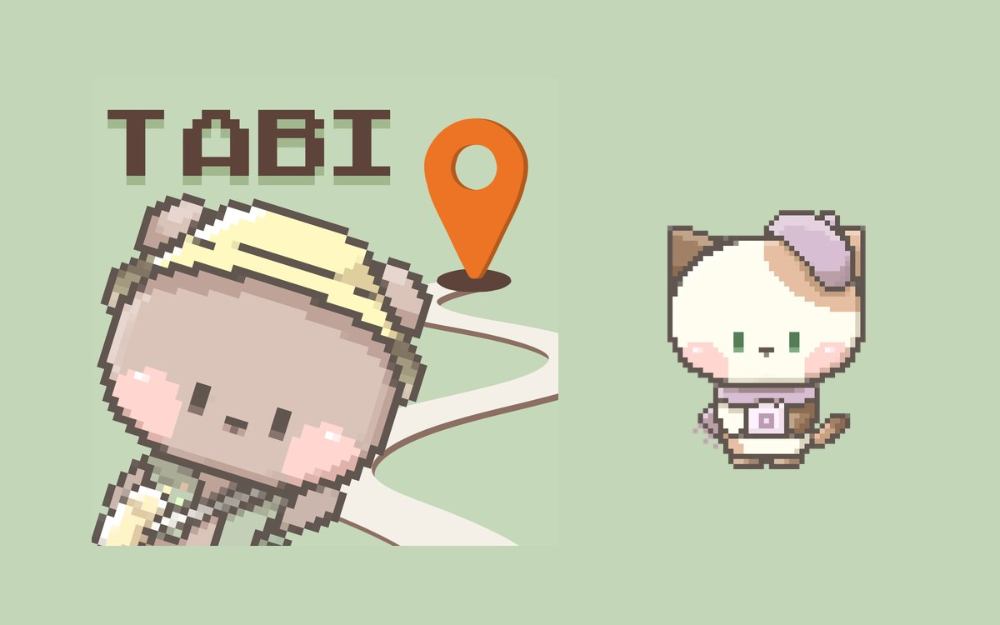
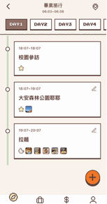
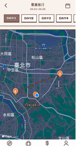
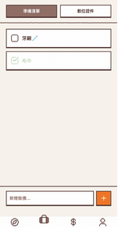
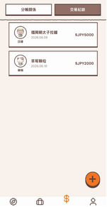
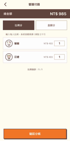

作品概要
給一群人一起旅行用的像素風格 App。建立或加入一趟「冒險」後，隊員可以共用行程、地圖、背包清單和記帳。
我負責的部分
團隊作品。我負責大部分的程式（全端）。組員負責美術，以及一小部分前端介面的修改。
技術與工具
- Expo / React Native + expo-router：底部五個分頁：行程、地圖、背包、錢包、隊伍。
- Firebase：身分驗證與 Firestore 即時資料同步，隊員改了資料，其他人馬上看得到。
- react-native-maps + expo-location：把行程地址轉成座標畫在地圖上，也可以跳到 Google Maps。
- open.er-api.com 匯率 API：外幣消費自動換算成新台幣。
- 像素字型 Press Start 2P、Cubic 11，以及像素角色與圖示。
製作過程
- 2026 年 5 月參加行動應用創新賽，和團隊一起開發。
待補：開發過程中的關鍵決定與遇到的問題。
來源：SOURCE.md
目前成果





- 行程：每天的行程可以填時間、類型、地址、備註和圖片。
- 錢包：記錄付款人、替誰付錢；「分帳關係」分頁算出誰該還誰多少。
- 隊伍：隊員列表、隊長標示、深色模式、離開隊伍。
來源：adventure.tsx、wallet.tsx、SOURCE.md（截圖）